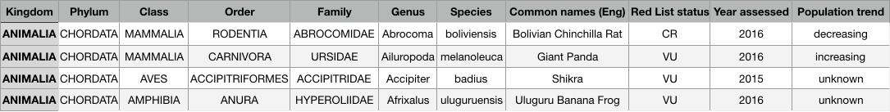

Background Information and Research Questions
On March 19, 2018, the world's last known male northern white rhinoceros died in Kenya. This makes the species functionally extinct. In fact, the Global extinction crisis is far more serious than previously thought - It is estimated that the current extinction rates are 1,000 times higher than natural background rates of extinction. [1]
In our project, we will study the endangered animal species. We are interested in looking at which groups of animals have higher risks of endangerment and what is the population trend over time.
The IUCN Red List of Threatened Species
The dataset is retrieved from the International Union for Conservation of Nature . The IUCN Red List is widely recognized as the world's most comprehensive inventory of the global conservation status of biological speicis. [2] In our project, we will study three taxonomic groups: birds, mammals, and amphibians. We focus on species categorized as the 5 Red List Status assessed from 2000 to 2017. The dataset contains 4,774 datapoints after preprocessing.
Figure 1: Examples from dataset
Zoomable Sunburst
The sunburst shows the taxonomic rank of the aminals: Kingdom, Phylumn, Class, Order, Family and Genus. You can click on any arc to zoom in, click on the center circle to zoom out, or hover over an arc to view the category name and count.
It seems that amphibians are at a higher risk of endangerment, possibly because of their sensitivity to environmental changes. Most of the vanishing amphibians are of the Anura Order, which includes frogs and toads. Looking into the Anura Order, we found that some of the most threatened species include tree frogs in Hylidae Family, shrub frogs in Rhacophoridae Family, stub-foot toads in Atelopus Genus and rain frogs (i.e. Eleutherodactylus).
A large portion of birds in risk of extinctions are of order Passeriformes, which is not surprised because naturally Passeriformes includes more than half of all bird species. Within the Passeriformes Order, bird species of finches (i.e. the Fringilidae) and tanager (i.e Thraupidae) are most threatened. Among other Orders, the true Parrots - species of colorful flighted birds in Psittacidae Family of Psittaciformes Order - are fast disappearing.
Strikingly, a large variety of our closest relatives — the primates — are endangered, including monkeys [e.g. Macaca (i.e. Macaque), Ateles (i.e. Spider monkey)], lemurs [e,g. Sportive lemur (i.e. lepilemuridae), Brown lemurs (i.e. eulemur)], and apes [e.g. hylobatidae (i.e. Gibbon)]. In addition to primates, rodent - including several species of murids, cricetidae and squirrels (sciuridae) - are severely threatened.
Histogram of Red List Status
You can click on the categories to hide or show the category. Hover over a bar to see specific statistics.
While the numbers of endangered and critically endangered amphibians are much higher than birds and mammals, there are fewer amphibians that are proved to be extinct or extinct in wild. Birds, on the other hand, are facing the opposite situation: many of the threatened bird species are in the vulnerable stage, and fewer of them are categorized as endangered and critically endangered. However, more bird species have already disappeared from the earth forever. Mammals occupies least portion in the vulnerable species, but the number of endangered mammals is high.
We will next look into the population trend to further examine the situation.
Proportaional Bar Charts
In general, a higher percentage of the vulnerable species have more stable and increasing population trend, while only a very small percentage of critically endangered species have stable and increasing population. However, the population decrease in endangered species is most severe - more than 80% of them are disappearing. The decreasing population of amphibians is the smallest, which seems to be contrary to our previous analysis. However, we also notice that there is a large portion of amphibians with unknown population trend. In addition, there are only 15 amphibian species that are confirmed to have an increasing population. Though there have been more extinct bird species in the past, we see that the more percentage of the threatened bird species have a stable or increasing population - possibly explains why there are fewer endangered and critically endangered bird species in the previous section. The knowledge of aves population is also more comprehensive as there are less unknowns. Mammals have the largest percentage of decreasing population and least percentage of a stable and increasing population, which is not a good sign.
Population Trend over time
You can click on the categories to hide or show the category. Hover over the points to see specific statistis.
From 2004 to 2013, it appears that the percentage of decreasing population trend is decreasing (the red line). However, this is not an optimistic statement because there are also more species whose population trend is unknown, as shown by the increasing blue line. In fact, since 2014, the scientists have obtained and published more information about the population of those unknown species. We then immediately see a drastic increase in the percentage of decreasing population trend. Meanwhile, the percentages of species with increasing or stable population trend do not have large fluctuations. Overall, if we compared the percentage of species' population trend in 2017 to that around 2004, we see slightly more percentage of increasing and stable population trend, and less percentage of decreasing trend. However, the changes are not significant.
[1] Chivian, E. and A. Bernstein (eds.) 2008. Sustaining life: How human health depends on biodiversity. Center for Health and the Global Environment. Oxford University Press, New York. [2] IUCN 2017. The IUCN Red List of Threatened Species. Version 2017-3.